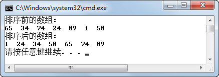

10.1 排序算法
在学习《Java语言基础与面向对象编程实践》时，介绍了两种排序算法，一种是冒泡排序，另一种是直接插入排序，现在先回顾一下冒泡排序和直接插入排序。
- 冒泡排序
冒泡排序就是依次比较相邻的两个数，将小数放在前面，大数放在后面。
第一轮：首先比较第1个和第2个数，将小数放前，大数放后。然后比较第2个数和第3个数，将小数放前，大数放后，依次类推，直至比较最后两个数，将小数放前，大数放后。至此第一轮结束，将最大的数放到了最后。
第二轮：仍从第1对数开始比较，将小数放前，大数放后，一直比较到倒数第2个数（倒数第一的位置上已经是最大的数），第二轮结束，在倒数第二的位置上得到一个新的最大数（其实在整个数列中是第二大的数）。
第三轮：…
按此规律操作，直至最终完成排序。由于在排序过程中总是小数往前放，大数往后放，类似于小的气泡往上升，所以称作冒泡排序。
- 直接插入排序
直接插入排序存在两个表，一个是有序表，另一个是无序表。每次从无序表中取出第一个元素，把它插入到有序表的合适位置，使有序表仍然有序。
第一轮：比较前两个数，然后按顺序插入到有序表中，剩下的数仍在无序表中。
第二轮：把无序表中剩下的第一个数据与有序表的有序数列进行比较，然后把这个数插入到合适位置。
第三轮：……
按此规律操作，直至无序表中的数全部插入到有序表，完成排序。
接下来，将再学习两种排序算法，一种是选择排序，另一种是快速排序。
10.1.1 选择排序
选择排序是常用的一种排序方式，接下来以直接选择排序算法为例介绍选择排序。直接选择排序算法思路的核心是：N（N为需要排列的元素个数）从1开始，每一轮从待排数列中选择第N小（或大）的数放到排序列表的第N个位置。
第一轮：从全部待排序数列中选出最小的数，然后与第1个位置的数进行交换。
每二轮：从第2个位置到最后一个位置中（待排序数列）选出最小的数，然后与第二个位置的数进行交换。
第三轮：…
按此规律操作，N-1轮以后，待排序数列就变成从小到大进行排序的数列了。
使用直接选择排序算法进行排序，具体代码如下：
public class TestSelect{
public static void main(String[] args) {
int[] array = {65,34,74,24,89,1,58};
System.out.println("排序前的数组:");
for (int i = 0; i < array.length; i++) {
System.out.print(array[i]+" ");
}
System.out.println();
selectSort(array);//使用直接选择排序
System.out.println("排序后的数组:");
for (int i = 0; i < array.length; i++) {
System.out.print(array[i]+" ");
}
System.out.println();
}
//直接选择排序
public static void selectSort(int[] a) {
for(int i = 0; i < a.length-1; i++){
int k = i;
//选择待排序数列中最小数的下标
for(int j = i; j < a.length; j++){
if(a[k] > a[j]){
k = j;
}
}
if(k != i){
int temp = a[i];
a[i] = a[k];
a[k] = temp;
}
}
}
}
编译、运行程序，运行结果如图10.1所示。

图10.1 直接选择排序
10.1.2 快速排序
快速排序是对冒泡排序的一种改进，它的基本思想是通过一轮排序将要排序的数据分割成独立的两部分，其中一部分的所有数据比另外一部分的所有数据都要小，然后再按此方法对这两部分数据分别进行一轮排序，整个排序轮次递归进行，使整个数据变成一个有序序列。 每轮排序的具体算法如下：
（1）设置两个变量i、j（均为下标变量），排序开始的时候i=0，j=N-1。
（2）以第一个据元素作为关键数据，赋值给key，即key=a[0]。
（3）从j开始向前搜索j--，即由后开始向前搜索，找到第一个小于key的值a[j]，a[i]与a[j]交换。
（4）从i开始向后搜索i++，即由前开始向后搜索，找到第一个大于key的a[i]，a[i]与a[j]交换。
重复步骤（3）和步骤（4），直到i=j，则将小于key的数全部都放在key前，将大于key的数都放在了key后。
快速排序的算法在理解上还是有一定难度的，接下来通过执行一轮快速排序算法来对array{58,34,65,89,74,1,24}数组进行排序。
array数组排序前的序列如下：
| 58 | 34 | 65 | 89 | 74 | 1 | 24 |
选择初始关键数据key=58（注意关键key保持不变，总是和key进行比较，最后的目的就是把key放在中间，小的放前面，大的放后面）。
第一次交换：从最后的数24开始搜索，找到第一个小于58的数24（此时j=6），将58和24进行交换，交换后结果如下：
| 24 | 34 | 65 | 89 | 74 | 1 | 58 |
第二次交换：从第一个数24开始搜索，找到第一个大于58的数65（此时i=2），将58和65进行交换，交换后结果如下：
| 24 | 34 | 58 | 89 | 74 | 1 | 65 |
第三次交换：从最后的数65开始搜索，找到第一个小于58的数1（此时j=5），将58和1进行交换，交换后结果如下：
| 24 | 34 | 1 | 89 | 74 | 58 | 65 |
第四次交换：从第一个数24开始搜索，找到第一个大于58的数89（此时i=3），将58和89进行交换，交换后结果如下：
| 24 | 34 | 1 | 58 | 74 | 89 | 65 |
再往下执行，在没有交换数据前即出现了i和j的数值都为4的情况，满足第一轮退出条件。观察排序后的数序，发现小于58的数都排到了58的前面，大于58的数都排到了58的后面。再按此方法对前后两部分数据分别进行一轮排序，这样递归下去，达到排序的目的。
使用快速排序的代码如下（请大家认真阅读注释，理解代码的含义）：
public class TestQuick
{
public static void main(String[] ary)
{
int[] array = {65,34,58,89,74,1,24};
System.out.println("排序前的数组:");
for (int i = 0; i < array.length; i++) {
System.out.print(array[i]+" ");
}
System.out.println();
sort(array, 0, array.length - 1);//使用快速排序
System.out.println("排序后的数组:");
for (int i = 0; i < array.length; i++) {
System.out.print(array[i]+" ");
}
System.out.println();
}
//进行一轮排序，array为排序数组，i，j为排序起始和结束位置，返回关键数据排序后索引
private static int sortUnit(int[] array, int i, int j)
{
int key = array[i];
while (i < j)
{
//从后向前搜索比key小的值，比key小的放左边
while(array[j] >= key && j > i)
j--;
//交换
array[i] = array[j];
//从前向后搜索比key大的值，比key大的放右边
while (array[i] <= key && j > i)
i++;
//交换
array[j] = array[i];
}
//当i=j时，一轮排序结束
array[j] = key;
//返回关键数据排序后索引
return j;
}
//快速排序，递归调用
public static void sort(int[] array, int low, int high)
{
if (low >= high)
{
return;
}
//完成一轮排序
int index = sortUnit(array, low, high);
//对左边部分进行排序
sort(array, low, index - 1);
//对右边部分进行排序
sort(array, index + 1, high);
}
}
编译、运行程序，运行结果如图10.2所示。

图10.2 快速排序